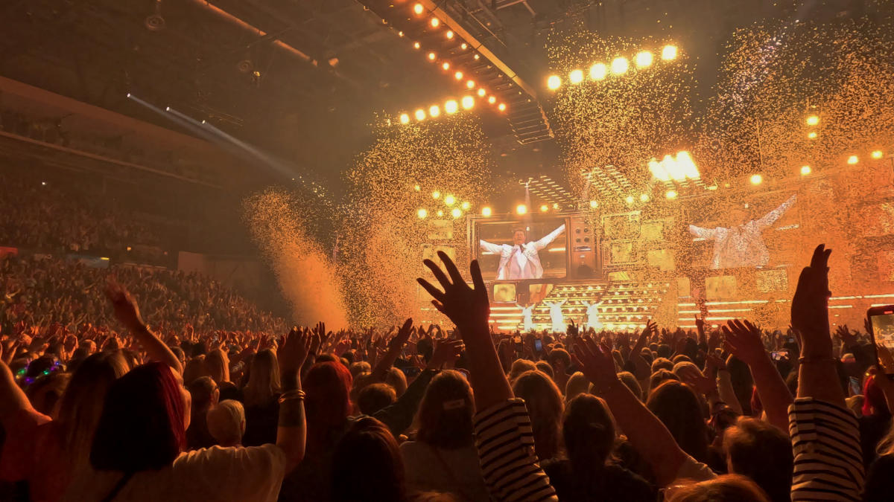

About us
Durban Connect was started in 2026 by a first-year student with an interest in technology and community development. The idea came from the need for a better way to find and keep up with local events happening around Durban.
Durban Connect is a digital platform designed for the Durban community. It allows users to search for events by date, category, or location, and provides clear, up-to-date information such as venues, ticket details, and event updates. Users can also RSVP directly on the platform, making it easier to plan ahead and keep track of events they are interested in.
For event organisers, Durban Connect offers a simple way to promote events and reach a wider audience. Instead of relying only on social media or word of mouth, organisers can list their events in one central place. The platform supports all types of events, including markets, live shows, workshops, festivals, and community gatherings.
What makes Durban Connect different is its focus on community. Users can connect with friends, share event plans, and see what others are attending (with permission). These features make the experience more interactive and help people feel more connected to what is happening around them.
Durban Connect also aims to support local culture and small businesses by making events more visible and accessible. By bringing everything into one platform, it helps more people discover and take part in local activities. Although still in its early stages, Durban Connect continues to grow and improve. The long-term goal is to become the go-to platform for discovering events in Durban, for residents, students, visitors, and tourists alike.

What drives us
Mission
To connect local Durbanites by providing a simple and reliable platform to discover, share, and engage in local events.
Vision
To become the leading platform for discovering events in Durban, helping to build a more connected and active community.
What we specialise in
The website works on improving the visibility of events in Durban and making it easier for people to discover what is happening in the city. We are working towards reaching a wider audience and managing events more efficiently.